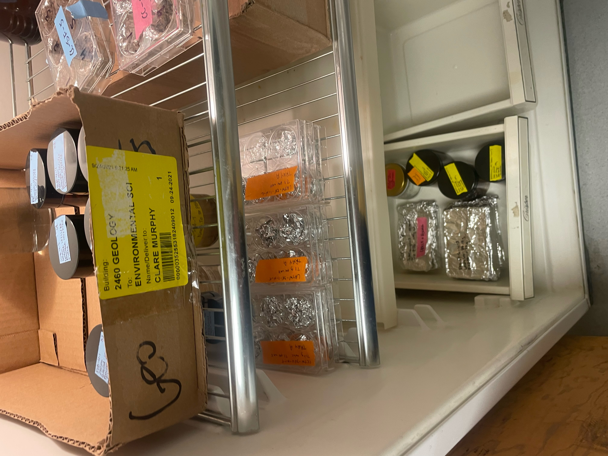
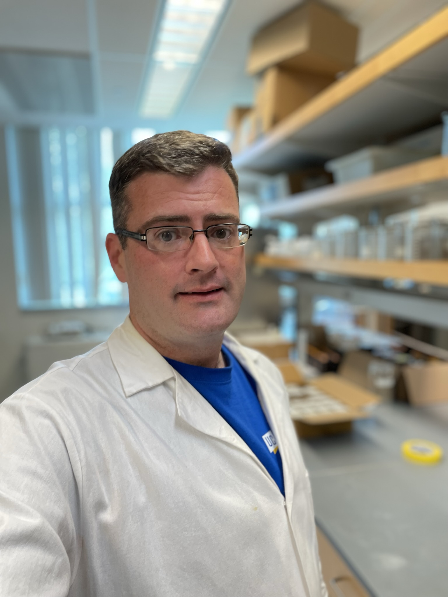
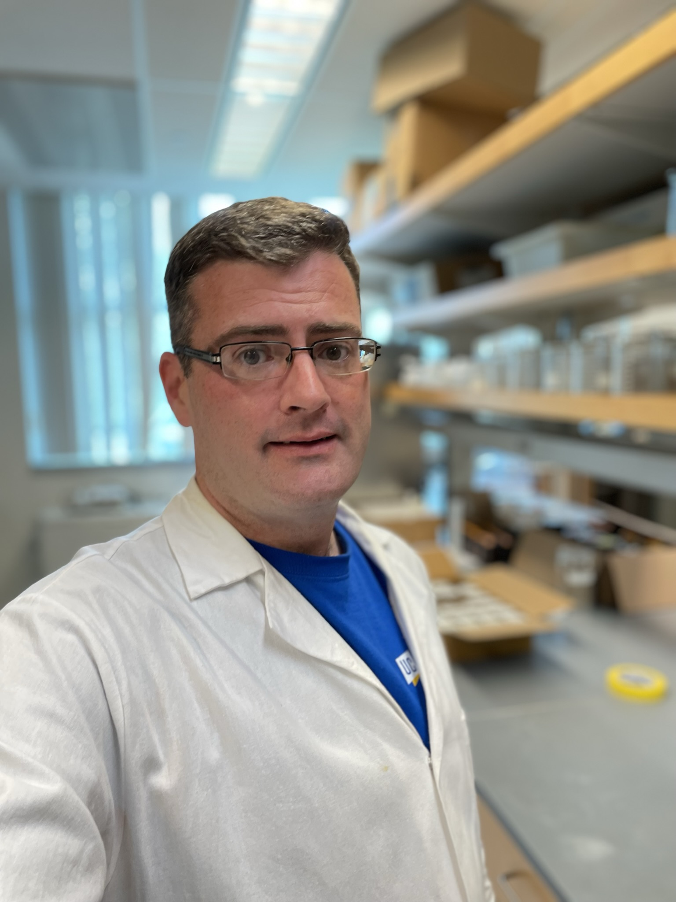

John Perna
With a resolute passion for environmental science and public service, I have dedicated the last 16 years to enhancing environmental health and safety in my role with the County of Riverside Department of Environmental Health. This journey has not only been a professional commitment but a personal one, driven by a deep-seated desire to contribute to sustainable development and community well-being.
My academic path began at Riverside City College, where I earned an associate's degree in Math and Science with distinction. This foundational experience sharpened my analytical skills and fortified my resolve to delve deeper into environmental issues. I continued my education at the University of California, Riverside (UCR), where I achieved a Bachelor of Science in Environmental Science with a minor in Public Policy, graduating cum laude. My undergraduate studies were marked by a burgeoning interest in the intricate balance between environmental health and policy-making, prompting me to explore the nuanced impacts of legislative frameworks on environmental initiatives.
Currently, I am pursuing a PhD in Environmental Science at UCR, where I am part of the innovative Gray Hydrology, Geomorphology, and Plastic Pollution Lab. Under the mentorship of Dr. Andrew Gray, my research focuses on sedimentary transport processes. This work is crucial as it contributes to our understanding of how sediments move within our water systems—a key factor in addressing pollution and restoring ecosystems. My research has implications not only for environmental restoration projects but also for policy development, offering insights that could shape future environmental strategies.
Throughout my career and studies, I have consistently sought to bridge the gap between scientific research and practical environmental health applications. My professional role involves assessing and managing environmental risks, implementing health and safety regulations, and engaging with the community to promote sustainable practices. Each of these responsibilities underscores the complex interplay between environmental science and public health, an intersection where I have found my calling.
As a lifelong learner and advocate for environmental integrity, I am committed to using my skills and knowledge to make a tangible difference. Whether through field research, policy analysis, or community engagement, my goal remains the same: to contribute to a healthier, more sustainable world.
Looking ahead, I am eager to continue contributing to the field of environmental science, with particular emphasis on how our ecological systems interact with human-made policies and practices. I am also focused on expanding my reach through collaboration with fellow scientists, policymakers, and community leaders to foster an integrated approach to environmental health and safety.
In conclusion, my career is more than a series of positions held and degrees earned; it is a testament to a lifelong commitment to environmental stewardship and public service. Through continued research, education, and community involvement, I aim to inspire and enact change that ensures a safe, healthy, and sustainable future for all.
Experience
PhD Student
• Ran Sceince Experiments
• Presented Science Experiments
• Stressed about Science Experiments
Pizza Delivery Driver
• Delivering Pizza Hot and Fresh
• Taking Orders
• Opening and Closing Store
• Slaying
Education
UC Riverside
Riverside City College
Portfolio




